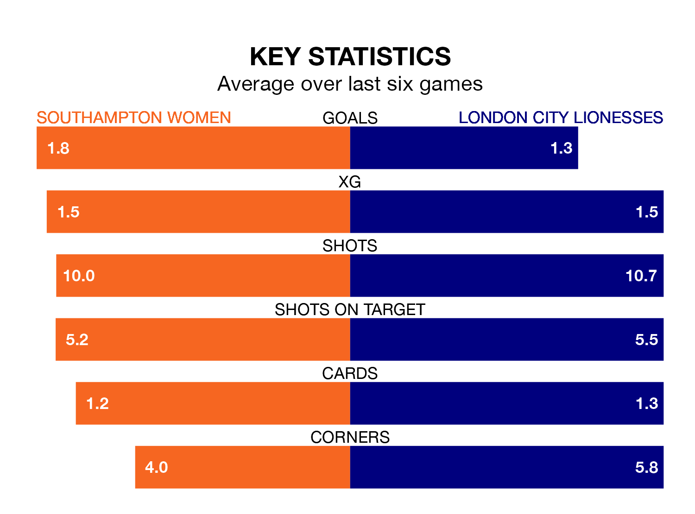

London City Lionesses travel to Southampton Women on early Sunday in the FA Women's Championship.
The visitors come into the game on the back of a defeat in their last match, having lost to Sheffield United Women 2-1 at home, with a goal from Lotta Lindström.
The Saints, meanwhile, won their last match, 2-1 against Lewes Women, with their goals scored by Emma Thompson.
With 36 goals in 20 games so far this season, Southampton are the league's second-highest scorers with 1.8 goals per game. And they are conceding fewer than average, letting in 22 goals at a rate of 1.1 per game.
London City, meanwhile, are below average scorers, with 1.1 goals per game, compared to a league average of 1.4. They have conceded 1.6 goals per game.
The Saints are third in the table after 20 games, of which they have won 12 and lost eight, earning 36 points.
The Lionesses are five places behind the hosts in eighth, with six wins and four draws putting them on 22 points.
In Sophia Pharoah and Katie Wilkinson, Southampton have two of the league's most on-form strikers so far this season. They have notched eight goals each, to sit fourth in the scoring charts.
The away side's top scorer, with five goals in 16 games, is Chantelle Boye-Hlorkah.
In the last three years, Southampton and London City have played each other on three occasions. They won one each, and they drew once.
Their last meeting was on October 22, when London City won 1-0 at home.
Southampton are in mixed form in the FA Women's Championship, with three wins and three losses from their last six games.
With three wins and a draw over that period, London City's form is slightly better – they have taken 10 points from 18, compared to the Saints' nine.
Updated: 10:01 (UTC), 12/04/24